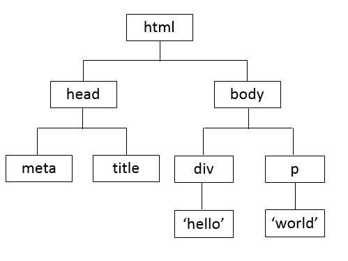
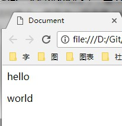
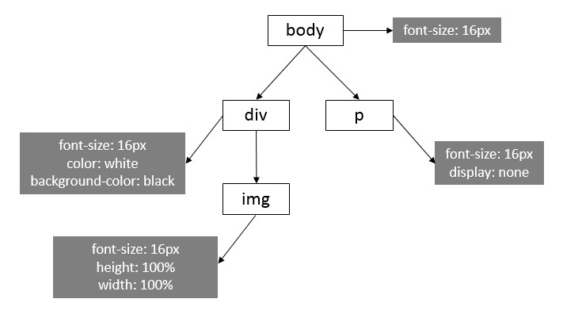
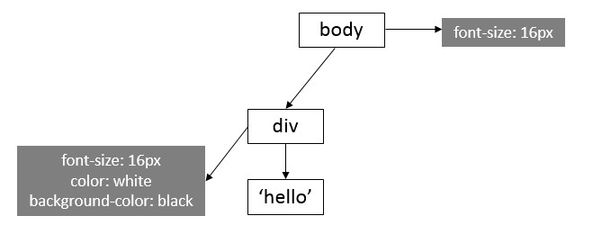
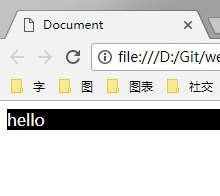

浏览器渲染
相关概念
- DOM（Document Object Model，文档对象模型）：是 HTML 和 XML 文档的编程接口（API），它将文档解析为一个由节点和对象（包含属性和方法的对象）组成的结构集合。简言之，它会将 web 页面和脚本或程序语言连接起来[1]
-
DOM Tree（文档对象模型树）：是 HTML 解析器将 HTML 页面进行解析后生成的树状结构
<!DOCTYPE html> <html lang="en"> <head> <meta charset="UTF-8"> <title>Document</title> </head> <body> <div>hello</div> <p>world</p> </body> </html> DOM Tree  无样式下的渲染结果 - CSSOM（CSS 对象模型）：CSS Object Model 是一组允许用JavaScript操纵CSS的API。[2]
-
CSSOM Tree（CSS 对象模型树）：当加载完样式后， CSS 解析器将其解析后生成的树状结构
body { font-size: 16px; } div { color: white; background-color: black; } div img { width: 100%; height: 100%; } p { display: none; } CSSOM Tree - Render Tree（渲染树）：CSSOM 树和 DOM 树合并成渲染树，然后用于计算每个可见元素的布局，并输出给绘制流程，将像素渲染到屏幕上，其过程为
- 从根节点遍历 DOM 树每个可见节点，应用其适配的 CSS 规则，最后连其内容和计算的样式同发射可见节点
- 从根节点遍历渲染树，将渲染树中的每个节点转换成屏幕上的实际像素
 将 DOM 树和 CSSOM 树合并后的 Render Tree  最终渲染结果
阻塞关系
- 加载（下载资源）：
- CSS、img 等资源的加载都是异步下载的，不会阻塞到 HTML 解析器的解析
- Javascrript 加载默认是同步下载的，会阻塞 HTML 解析器的解析。设置 async 或 defer 后是异步下载，不会影响 HTML 解析器的解析
- 构建 / 执行：
- CSS 解析器解析 CSSOM 树不会影响 HTML 的解析，但会阻塞（Render 树）渲染
- Javascript 执行阻塞 HTML 的解析，自然也阻塞（Render 树）渲染
实例

<!DOCTYPE html>
<html lang="en">
<head>
<meta charset="UTF-8">
<title>demo</title>
<script>
var start = new Date();
while (new Date() - start < 3000) {}
</script>
<script src="demo.js" async></script>
<style>
#container {
width: 100%;
text-align: center;
}
#container img {
width: 50%;
}
</style>
</head>
<body>
<div id="container">
<img src="demo.jpg">
<div>hello world</div>
</div>
</body>
</html>
console.log('hello');
- 浏览器下载完页面 demo.html 后，HTML 解析器开始解析 HTML 文档，遇到第一个 script 标签，执行 javascript 代码，该代码执行过程中 HTML 解析暂停
- 3 秒后，执行完脚本遇到第二个 script 标签，该标签为 async 因此不会阻塞 HTML 解析
- 读取到 style 标签后， CSS 解析器开始解析 CSSOM Tree，同时 HTML 解析器继续工作
- 之后 HTML 解析器解析产生 DOM Tree，期间加载了一个图片资源
- 最后 DOM Tree 和 CSSOM Tree 合并构建生成 Render Tree
- 此后用户通过 javascript 改变页面结构时，上述部分过程可能重复进行
参考文献
[1] MDN 什么是 DOM? https://developer.mozilla.org/zh-CN/docs/Web/API/Document_Object_Model/Introduction
[2] MDN CSS Object Model https://developer.mozilla.org/zh-CN/docs/Web/API/CSS_Object_Model
[3] Ilya Grigorik 渲染树构建、布局及绘制https://developers.google.com/web/fundamentals/performance/critical-rendering-path/render-tree-construction?hl=zh-cn
[4] Incapsula How browsers work http://taligarsiel.com/Projects/howbrowserswork1.htm